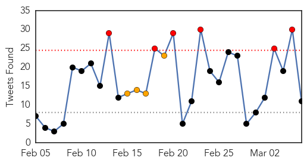
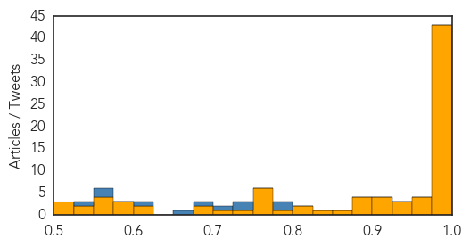
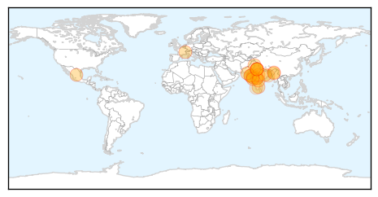

Ebola
30-Day Web Trend
0 alerts, 0 warnings

30-Day Twitter Trend
6 alerts, 4 warnings

Article Locations

Article Confidences
Top Articles:
- 1.000
- Liberia Releases Last Ebola Patient, But Threat Remains
- 1.000
- Liberia's last Ebola patient released
- 1.000
- Last Ebola patient is released in Liberia
- 1.000
- Last Ebola patient is released in Liberia
- 1.000
- Last Ebola patient is released in Liberia
- 1.000
- Ebola Still Relevant; New Cases and Fear of Ebola Still Prevalent
- 1.000
- Ban on health workers’ travel to Ebola-hit nations remains
- 1.000
- Last Ebola patient is released in Liberia
- 1.000
- Ebola virus death toll in West Africa reaches 9,840 — WHO
- 0.999
- Liberia Discharges Last Ebola Patient
- 0.999
- Liberia's last Ebola patient discharged
- 0.999
- Ebola Virus Disease Emergency Appeals (Liberia, Sierra Leone, Guinea, Nigeria, Senegal and Africa Coordination): Combined Ebola Operations Update No 17 - Sierra Leone
- 0.999
- UN medics to start Ebola vaccine trial
- 0.999
- Twenty-eight countries have worse health care systems than Liberia’s
- 0.999
- Ebola: Should we still be worried?
- 0.998
- Liberia releases last known Ebola patient from care
- 0.998
- Ebola: why the fight against the disease is far from over
- 0.998
- Last Ebola patient discharged in Liberia
- 0.998
- Liberia possibly free of Ebola
- 0.998
- Last Known Ebola Patient in Liberia Is Discharged
- 0.997
- Ebola: The Road to Zero Cases
- 0.997
- After 130 Days, Klain Ends Ebola Czar Term
- 0.997
- Should the world still be worried about Ebola?
- 0.997
- President Sirleaf addresses ACP-EU Parliamentarians;Holds Discussions with Top Level EU Executives
- 0.997
- Last Ebola patient in Liberia discharged from treatment center
- 0.997
- Liberian treatment centre discharges its last Ebola patient
- 0.997
- Ebola: FG rolls out $41m for post-containment, prevention, control
- 0.996
- Last Known Liberian Ebola Patient Released After Over 4,000 Died, the Highest Death Toll in any Affected Country
- 0.995
- Ebola Survivors Emerge as New Focus for Care
- 0.995
- Ebola doctors, nurses no longer recruited for West Africa
- 0.995
- Ebola Survivors Emerge as New Focus for Care
- 0.995
- Phase 3 vaccine trial begins as first Canadian Armed Forces Medical Team returns home from Sierra Leone
- 0.994
- Dallas nurse, Ebola survivor Nina Pham to sue Texas Health
- 0.993
- Canada sending Ebola help to Guinea
- 0.988
- Nurse treated for Ebola to sue Texas hospital
- 0.986
- Ebola outbreak: Liberia releases last patient
- 0.983
- Liberia's Last Ebola Patient Is Finally Out Of The Hospital
- 0.983
- Doctor’s experience sheds light on possible Ebola vaccine
- 0.983
- Why Is The VP Of Sierra Leone Running The Country By Laptop?
- 0.981
- Africa in the news: Ebola summit emphasizes post-epidemic recovery, Namibia’s Pohamba wins Ibrahim African leadership prize, and Lesotho forms a coalition government
- 0.980
- How 'Dumb Phones' Can Help Stop The Spread Of Ebola
- 0.977
- HMS Ebola conference emphasizes importance of basic supportive care
- 0.976
- Number of Ebola victims understated
- 0.972
- W.W. Hastings Hospital nurse returns from West Africa, working to fight Ebola
- 0.960
- Liberia Discharges Last Ebola Patient
- 0.957
- Regional approach, collaboration key to zero Ebola cases
- 0.955
- Mano River Union ends national consultative meeting
- 0.947
- Traditional Leaders Vow to Curtail Customary Practices
- 0.943
- Togo: Togo: Ebola Virus Disease Preparedness - DREF Final Report n MDRTG005
- 0.929
- Chaos and confusion in Freetown as unlawful exemption granted for burial of SLPP Tamba Sam
Showing top 50 articles...
Top Tweets:
- 0.794
- How 'Dumb Phones' Can Help Stop The Spread Of Ebola - Huffington Post http://t.co/RhjwpB8AKB ebola EVD
- 0.786
- Last Ebola Patient in Liberia Leaves Treatment Ward - ABC News http://t.co/mXiAzAy8l7 ebola EVD
- 0.744
- Last Known Ebola Patient in Liberia Is Discharged - New York Times http://t.co/X8t0ePrpQa ebola EVD
- 0.739
- The marathon West African Ebola outbreak's case count tops 24000 - 10 times the total of ALL known prior cases. http://t.co/Wmao2KnO8q
- 0.718
- The Hot Zone: An Ebola Treatment Unit Rises In West Africa - Popular Science http://t.co/V2n7vQ0SUq ebola EVD
- 0.682
- RT: The numbers of new confirmend Ebola cases in Liberia have been ZERO for many days. Whoopie! From the Min of Hlth http…
- 0.664
- AfricaAgainstEbola - United Against Ebola - Africa Together We Can Defeat Ebola http://t.co/w1Gg4REFeU
- 0.610
- A Mishap Sheds Light on an Ebola Vaccine - New York Times http://t.co/Q6JQMdL4OR ebola EVD
- 0.569
- RT: Distressing but important read: Devastating consequences of Ebola outbreak on maternal health http://t.co/x7zx3o56k7 http:…
- 0.564
- Hope but no respite from Ebola - The Hill (blog) http://t.co/nBjvYg7FpL ebola EVD
- 0.528
- RT: Ebola vaccination trial will take place in areas of Basse Guinée Guinea; region currently has the highest number of cases in th…
Swine Flu
30-Day Web Trend
13 alerts, 6 warnings

30-Day Twitter Trend
2 alerts, 0 warnings

Article Locations

Article Confidences

Top Articles:
- 1.000
- Swineflu: One more dead in Kashmir, toll reaches 8; 291 affected
- 0.999
- Swine flu: Burney trust warns Pakistanis against travelling to India
- 0.999
- 16 swine flu deaths in two Delhi hospitals; official toll is two
- 0.999
- UAE advises citizens against travelling to India
- 0.999
- Swine flu: UAE advises citizens against travelling to India
- 0.999
- Burney warns Pakistanis against travelling to India
- 0.998
- One more swine flu death takes toll to 9
- 0.997
- 2 more swine flu deaths in J&K
- 0.996
- 16 swine flu deaths in Delhi hospitals; official toll is two
- 0.996
- Swine flu worries
- 0.995
- Swine flu patient's sugar level worrying
- 0.994
- Swine flu claims more lives in India
- 0.990
- Ansar Burney warns Pakistanis traveling to India
- 0.982
- Ansar Burney warned Pakistani citizens against traveling to India
- 0.976
- Sonam Kapoor tests positive for swine flu
- 0.973
- First swine flu case in Manipur
- 0.960
- Daman on alert for tourists from swine flu-hit Surat
- 0.948
- H1N1 cases go up to 11 in district
- 0.923
- Man succumbs to swine flu
- 0.831
- The Assam Tribune Online
- 0.667
- Patient ordeal after cure
- 0.649
- Red tape delays swine flu testing lab
- 0.590
- Tour operators fear cancellations as UAE issues travel advisory
- 0.565
- Holi will be low-key affair this time in city
Top Tweets:
-
No tweets found for Mar 06, 2015